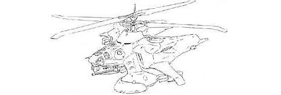

| Gunship Heli |
|
|  | |
General and Technical Data |
|
|
Unit type: ground suppression helicopter Armament: 6-barrel 60mm gattling gun; 2 x 16-tube minimissile launcher; 8 x missile |
|
| Technical and Historical Notes | |
|
Despite the Dopp jet fighter's ridiculously high speed and maneuverability, it isn't very durable and lacks heavy weaponry. As the war progressed and it became apparent that the Federation was indeed working on some form of mobile suit, Zeon designers set out to produce an airborne heavy weapons platform for tough ground suppression. Oddly enough, what they came up with wasn't even a wholly original design.
The Zeon's Heli Gunship was closely modeled after the Soviets' Kamov Ka-50, some of which they found collecting dust inside the numerous central Asian bases they overran towards the end of Operation British. Its dual contra-rotating blades give it a ridiculous thrust-to-lift ratio, and it also effectively renders a tail rotor worthless. The Heli Gunship's tail is thusly equipped with numerous shuddered ducts that vent engine exhaust out at the pilot's discretion, giving the Heli great mobility for a helicopter. As it is intended for heavy attack, the Heli is armed with a large 60mm gattling gun mounted under its nose. This hefty weapon fires accurately at a very high cyclic rate, and is extremely dangerous to both tanks and mobile suits. It also sports a number of missiles of various power under its stubby wings for long-range attacks.
Cockpit |
 RPG quick stats sheet
RPG quick stats sheet